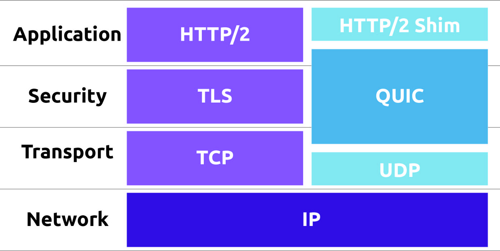
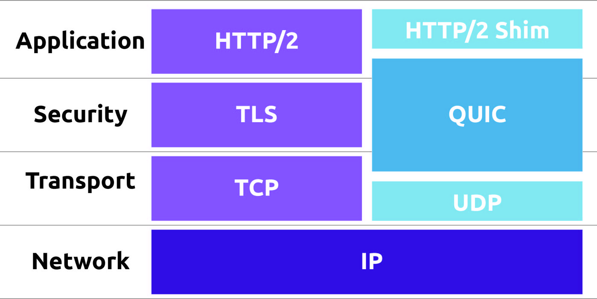

HTTP är en form av protokoll som kan användas till, som t.ex med hjälp av tillägg av dess förfrågningsmetoder, felkoder och rubriker. HTTP är ett TCP / IP-baserat kommunikationsprotokoll som används till för att leverera information i olika former som HTML-filer, bildfiler, frågeresultat osv i internetet.
TCP gör det möjligt att överföra information i båda riktningarna. Det betyder att datasystem som kommunicerar via denna funktion(TCP) kan det skickas och hämtas samtidigt information, som det här exempelt, ett telefonsamtal. Protokollet använder sig av segment som klarogör basenheter för dess dataöverföring.
En IP-adress står för "internetprotokolladress". Det innebär att det är en sort av verifikation på din plats som du använde dator ifrån, och det görs genom att det ger ut ett identifieringsnummer som är till att associera med en specifik dator eller ett datanätverk. När den är ansluten till internet tillåter IP-adressen datorerna att skicka och ta emot information.
 '

'

URL står för En “Uniform Resource Locator”. Som i betyder att de är en webbadress, vilket gör så att en referens till en webbplats kan nämna platsen i det ett datanätverk och mekanism för att den ska komma fram. En URL är en specifik typ av Uniform Resource Identifier (URI), vilket många användare möjligtvis blandar ihop de termerna .URL: sker man ska bifoga sig till webbsidor, starten av varje länk (http), men även används till filöverföring (ftp), e-post (mailto), databasåtkomst (JDBC) och många andra former av applikationer. Oftast så visar de flesta webbläsarna webbadressen till en webbsida ovanför sidan i ett så kallat adressfält. En typisk exemepel av en URL kan ju ha formuläret på likande sätt, som följande, http://www.example.com/index.html, som anger ett protokoll (http), ett värdnamn (www.example.com) och ett filnamn (index.html).